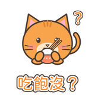

芷晴21
大三，課表排好才有力氣到處吃。想找一起跑咖啡廳、看首輪電影的人。
Foci 是以交友圈為核心的交友 App。加入登山、咖啡、同行業或你住的那一區，在圈子裡滑卡，配對時會標出你們的共同圈。
選你在意的圈，可以多選
已選 1 個
和你同圈 7 位：芷晴、冠宇、思妤、偉翔、語婷、以萱 等
芷晴21
大三，課表排好才有力氣到處吃。想找一起跑咖啡廳、看首輪電影的人。
興趣、身份、地區都有圈，有些圈設了加入條件，例如只限女性。先加入你在意的圈子，再在圈子裡滑卡。
同一個圈的人可以一起聊天。大家預設只顯示名字的第一個字和模糊頭像，聊得來再互相認識；付費會員每月可以解鎖幾位圈友的名字與頭像。
在你加入的圈子裡滑卡。卡片上有距離、城市、自我介紹和興趣標籤，喜歡就按愛心，雙方都喜歡就配對成功。
身高、職業、學校、感情狀況、語言，往下滑一次看完。先讀懂一個人，再決定要不要按喜歡。
聊天室第一行寫著你們在哪個圈配對，輸入框上方有現成的破冰問句，點一下就送出。
揪團爬山、走步道、追百岳，不限程度。
手沖、義式、找新咖啡館，交換口袋名單。
底片、街拍、風景，一起出門拍照。
課表交流、找運動夥伴，一起進步。
國內外旅行、揪伴同遊與行程分享。
紅白酒、威士忌、調酒的小酌同好。
銀行、投資、保險與財經從業者。
大安區生活圈，步行就能約到的距離。
限女性加入，可以更自在地慢慢認識人。
週末一起去陽明山做瑜伽嗎？☀️
13:03
可以呀，我會多帶一張瑜伽墊 🧘♀️
13:08
算我一個！幾點集合？
13:37
好久沒上山了，我也報名 🙋♀️
13:43
采潔28
美食編輯，吃遍台北是我的工作也是興趣。最懂巷弄裡的隱藏名單。
Mia30
台北 ・ 天蠍座
關於我
健身教練，相信流汗是最好的保養。從討厭運動到愛上運動，現在想把這份能量帶給更多人。
興趣
健身拳擊慢跑料理
你們在「登山健行」配對成功
你週末有空嗎？想約大安森林公園晨跑
23:19 已讀
好啊！大概幾點？
23:21
早上七點會不會太早
23:23 已讀
不會，我可以！順便帶咖啡給妳
23:25
聊天列表上，名字旁邊就寫著你們在哪個圈認識。第一句話有話題，不用想破頭。
那間的手沖真的不錯，週末一起去？
哈哈哈 不能逃避腿日喔
下個月想去花蓮，有推薦的嗎
不知道怎麼開口的時候，點一下問句就送出。之後要聊什麼，交給你們自己。
每次登入寄一組 6 位數驗證碼到你的信箱。不用記密碼，也就沒有密碼可以外洩。
輸入 6 位數驗證碼
驗證碼已寄到 you@example.com
Foci 用位置計算距離、推薦附近的人。只有你主動取得位置時才讀一次座標，不會在背景持續追蹤。
要允許「Foci」使用你的位置嗎？
Foci 需要你的位置，以便依距離為你推薦附近的配對對象。我們僅在你主動取得位置時讀取單次座標，不會持續追蹤。
封鎖之後，你們在探索和聊天裡都看不到彼此。遇到不舒服的訊息也可以直接檢舉。
聊天不開放傳照片，只能傳文字和 Foci 內建的 90 張貼圖，不會突然收到你不想看的圖片。

3個交友圈
每天滑 30 張卡，看得到最近 3 筆滑卡記錄。配對、聊天、破冰問句都不用付費。
8個交友圈
不限滑卡次數，直接看到誰已經喜歡你。另有進階篩選、無痕瀏覽、10 筆滑卡記錄、3 組 VIP 專屬貼圖，每月 5 次 Super Like 和 1 次 Boost，以及每月解鎖 3 位圈友的名字與頭像。
不限交友圈數量
包含所有 VIP 權益，每月 15 次 Super Like、每週 1 次 Boost、每月解鎖 20 位圈友，推薦排序也會優先讓你被看見。
VIP 與 VIP+ 透過 App Store 訂閱，可選 1、3 或 12 個月，價格以 App 內顯示為準，可隨時在 Apple ID 設定中取消。
其他問題可以到支援中心，或寫信到 support@foci-app.com。
Foci（Find Our Circle Inside）是以「交友圈」為核心的繁體中文交友 App。先加入登山健行、精品咖啡、同行業或你住的那一區這類圈子，再和同圈的人滑卡配對，配對時會標出你們的共同圈。登入只用 Email 驗證碼，聊天只能傳文字和內建貼圖。iPhone 版已在 App Store 上架，Android 版準備中。
一般交友軟體多半只看照片和距離。Foci 先讓你加入興趣、身份或地區的交友圈，可以在圈子裡只滑同圈的人，配對時會標出共同圈，開口就有話題。每個圈也有圈內聊天，身分預設遮蔽，可以先聊再決定要不要認識。
不用。免費版可以加入 3 個交友圈、每天滑 30 張卡，配對和聊天都免費。想加入更多圈、看誰喜歡你，再考慮 VIP 或 VIP+。
輸入 Email，Foci 會寄一組 6 位數驗證碼給你，填進去就登入了。帳號沒有密碼，所以也沒有密碼會被盜用。
可以，在圈子頁面直接退出。空出來的名額可以拿去加入別的圈。
不會。只有你主動取得位置時，Foci 才讀一次座標，用來計算距離和推薦附近的人，不會在背景持續追蹤。定位權限可以隨時在「帳號與隱私」裡關掉。
在對方的檔案或聊天室裡可以封鎖或檢舉。封鎖是雙向的，之後你們在探索和聊天裡都看不到彼此；檢舉會交給 Foci 團隊處理，進度可以在「我的檢舉紀錄」查看。
不行。一對一聊天和圈內聊天都只能傳文字和 Foci 內建的貼圖，避免收到你不想看到的圖片。
預設看不到。圈內聊天只顯示你名字的第一個字和模糊頭像；只有已經和你配對的人，或用每月額度解鎖你的付費會員，才看得到你的名字與頭像。不想被解鎖，可以在圈內聊天右上角關掉「允許圈友解鎖我」。
在 App 裡進入「我的 → 帳號與隱私 → 刪除帳號」。只是想休息一陣子的話，也可以選「暫停帳號」。
Android 版正在準備中，上架 Google Play 後會在這裡放上下載連結。目前可以先在 iPhone 上使用。